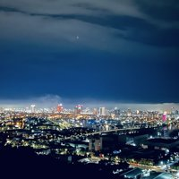
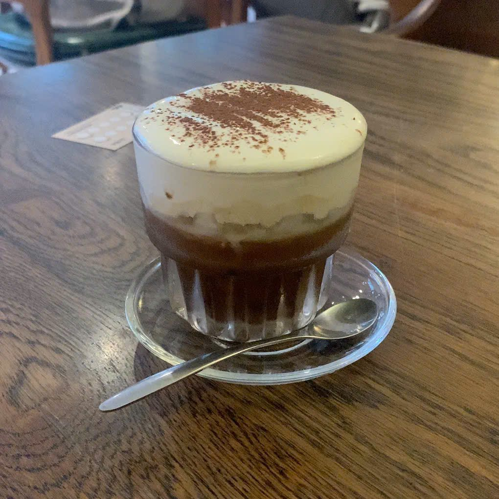

Chuyển đến nội dung chính

Trang chủ
Bộ sưu tập
Giới thiệu
Bộ sưu tập
Ảnh chụp trong khoảng một năm gần đây, chưa chỉnh nhiều.
Hoàng hôn sông Hàn
Chợ Hàn
Biển lúc nửa đêm
Đường về nhà

Cà phê muối
Đà Nẵng về đêm